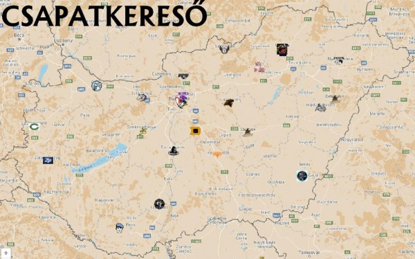

Magyar csapatok

Magyarországon eddig a sport elterjedése óta
Magyarországon található foci csapatok:
- Fehérvár Enthroners
- Debrecen Gladiators
- Budapest Cowbells
- Budapest Wolves
- Tatabánya Mustangs
- Szekszárd Crushers
- Budapest Titans
- Budapest Eagles
- Győr Sharks
- Dunaújváros Gorillaz
- Eger Heroes
- Újpest Bulldogs
- Miskolc Steelers
- Nyíregyháza Tigers
- Hajdúszoboszló Rhinos
- Diósd Saints
A további csapatokat itt lehet megtekinteni.